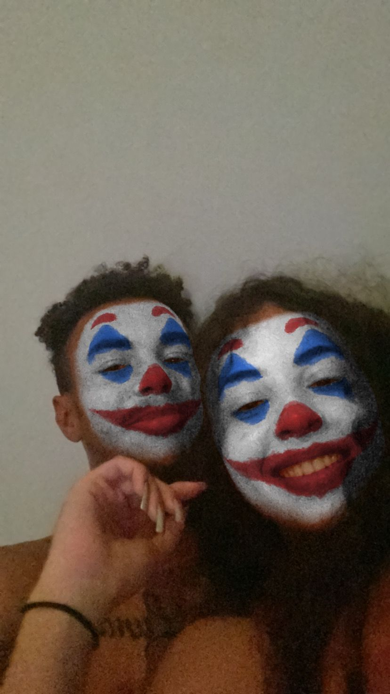
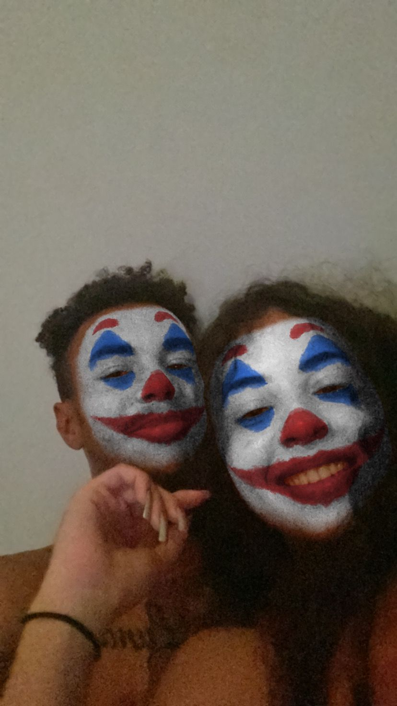
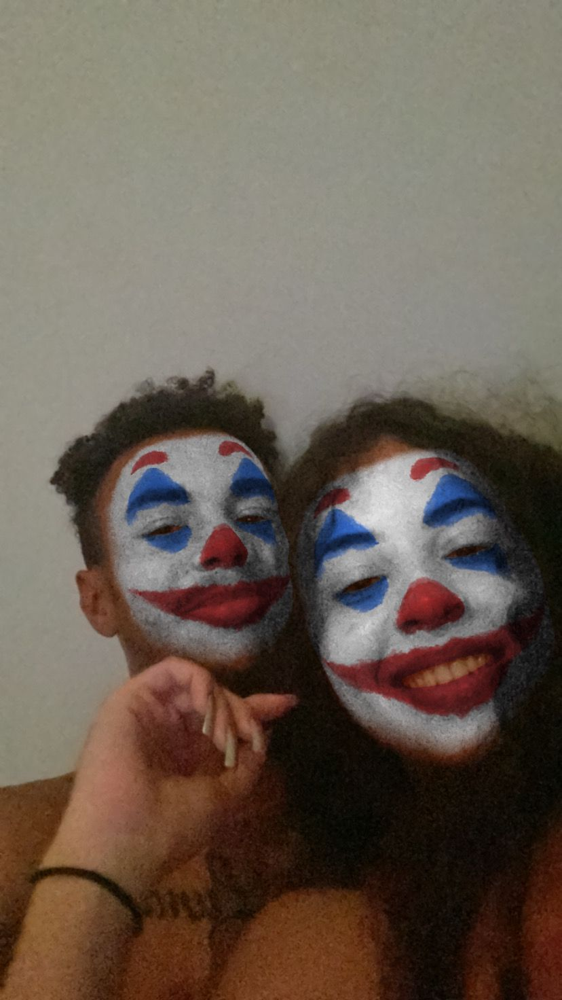

Clique no botão para entrar e liberar o conteúdo.

Desde o primeiro momento em que te vi, sentir uma conexão incrível. Eu sabia que tinha encontrado alguém especial e depois de muitas desavenças, entre altos e baixos, idas e voltas, finalmente percebi que eu tinha encontrado o amor da minha vida. Amei viver todas as fases e momentos ao seu lado e ainda tenho muito o que aprender sobre o amor, mas quero aprender com você, sei que não sou uma pessoa fácil de lidar e tenho muitos defeitos para corrigir, mas quero melhorar por você, por mim, por nós. Te prometo cada batida do meu coração, te prometo que teremos problemas, mas nunca sem solução. Não te prometo um final feliz, pois não quero que tenha um fim.